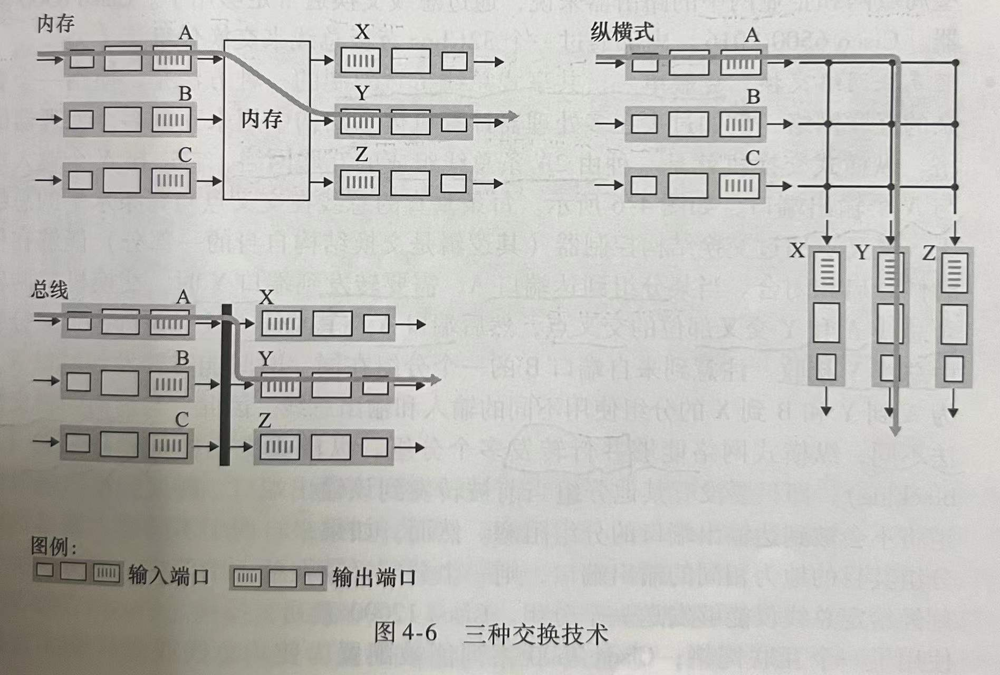

计算机网络-第4章 网络层：数据平面
4.1 网络层概述
每台路由器的数据平面的主要作用是从其输入链路向其输出链路转发数据报。
控制平面的主要作用是协调这些本地的每路由器转发动作，使得数据报沿着源和目的地主机之间的路由器路径最终进行端到端传送。
路由器具有截断的协议栈，即没有网络层以上的部分。
分组交换机是指一台通用分组交换设备，它根据分组首部字段中的值，从输入链路接口到输入链路接口转移分组。
分组交换机可以分为两种类型：
- 链路层交换机：基于链路层帧中的字段值做出转发决定。
- 路由器：基于网络层数据报中的首部字段值做出转发决定。
4.1.1 转发和路由选择：数据平面和控制平面
网络层的作用：将分组从一台发送主机移动到一台接收主机。为此，需要两种重要的网络层功能：
- 转发。是指将分组从一个输入链路接口转移到适当的输出链路接口的路由器本地动作。转发发生的时间尺度很短（通常为几纳秒），因此通常用硬件来实现。
- 路由选择。是指确定分组从源到目的地所采取的端到端路径的网络范围处理过程。路由选择发生的时间尺度长的多（通常为几秒），因此通常用软件来实现。
每台网络路由器中有一个关键元素是它的转发表。路由器检查到达分组首部的一个或多个字段值，进而使用这些首部值在转发表中索引，通过这种方法来转发分组。
- 控制平面：传统的方法
路由器中的转发表一开始是如何配置的？
路由选择算法决定了插入该路由器转发表的内容。在一台路由器中的路由选择算法与在其他路由器中的路由选择算法通信，以计算出它的转发表的值，根据路由选择协议交换包含路由选择信息的路由选择报文进行通信。
- 控制平面：SDN方法（Software-Defined Networking / 软件定义网络）
这是一种从路由器物理上分离的方法。远程控制器计算和分发转发表以供每台路由器使用。控制平面路由选择功能与物理的路由器分离，路由选择设备仅执行转发，而远程控制器计算并分发转发表。
4.2 路由器工作原理
上图是一个通用路由器体系结构的总体视图，标识了一台路由器的4个组件：
- 输入端口：作用见图，输入端口中的三个方框都有各自作用。
- 交换结构：将路由器的输入端口连接到它的输出端口，这种交换结构完全包含在路由器之中，即它是一个网络路由器中的网络。
- 输出端口：存储从交换结构接收的分组，并通过执行必要的链路层和物理层功能在输出链路上传输这些分组。
- 路由选择处理器：执行控制平面功能。在传统路由器中，执行路由选择协议，维护路由选择表与关联链路状态信息，并为该路由器计算转发表；在SDN路由器中，路由选择处理器负责与远程控制器通信，目的是接收由远程控制器计算的转发表项，并在该路由器的输入端口安装这些表项。
4.2.1 输入端口处理和基于目的地转发
输入端口的线路端接功能与链路层处理实现了用于各个输入链路的物理层和链路层。
在输入端口中执行的查找对于路由器运行是至关重要的。正是在这个地方，路由器使用转发表来查找输出端口，使得到达的分组能经过交换结构转发到该输出端口。
一旦通过查找确定了某分组的输出端口，则该分组就能够发送进入交换结构。在某些设计中，如果来自其他输入端口的分组正在使用该交换结构，一个分组可能会在进入交换结构时被暂时阻塞。因此，一个被阻塞的分组必须要在输入端口处排队，并等待稍后被调度以通过交换结构。
尽管”查找“在输入端口处理中可认为是最重要的动作，但还有其他必须采取的动作：
- 必须出现物理层和链路层处理。
- 必须检查分组的版本号、检验和以及寿命字段，并且重写后两个字段。
- 必须更新用于网络管理的计数器。
4.2.2 交换
交换结构位于一台路由器的核心部位，通过它，分组才能从一个输入端口转发到一个输出端口中。
交换有三种方式：
- 经内存交换。最简单、最早的路由器是传统的计算机，在输入端口与输出端口之间的交换是在CPU（路由选择处理器）的直接控制下完成的。输入与输出端口的功能就像在传统操作系统中的I/O设备一样。一个分组到达输入端口时，该端口会先通过中断方式向路由选择处理器发出信号。于是该分组从输入端口处被复制到处理器内存中，处理器从其首部提取目的地址，在转发表中找出适当的输出端口，并将该分组复制到输出端口的缓存中。不能同时转发两个分组，即使它们有不同的目的端口，因为经过共享系统总线一次仅能执行一个内存读/写。
- 经总线交换。输入端口经一根共享总线将分组直接传送到输出端口，不需要路由选择处理器的干预。通常按以下方式完成：让输入端口为分组预先计划一个交换机内部标签（首部），指示本地输出端口，使分组在总线上传送和传输到输出端口。该分组能由所有输出端口收到，但只有与该标签匹配的端口才能保存该分组。然后标签在输出端口被去除。如果多个分组同时到达路由器，每个位于不同的输出端口，除了一个分组外所有其他分组必须等待，因为一次只有一个分组能够跨越总线。因为每个分组必须跨过单一总线，故路由器的交换带宽受总线速率的限制。
- 经互联网络交换。纵横式交换机就是一种由2N条总线组成的互联网络，连接N个输入端口和N个输出端口，每条垂直的总线在交叉点与每条水平的总线交叉，交叉点通过交换结构控制器能够在任何时候开启和闭合。当某分组到达端口A，需要转发到端口Y时，交换机控制器闭合A和Y交叉部位的交叉点，A在其总线上发送该分组，该分组仅有Y接收。来自B的一个分组在同一时间能够转发到X，因为它们使用不同的输入和输出总线。因此，前面两种交换方法不同，纵横式网络能够并行转发多个分组，是非阻塞的。

4.2.3 输出端口处理
4.2.4 何处出现排队
在输入端口和输出端口都可以形成分组队列。随着这些队列的增长，路由器的缓存空间最终会被耗尽，当无内存可用于存储到达的分组时将会出现丢包。
假定输入线路速度与输出线路速度相同，均为Rline，并且有N个输入端口和N个输出端口，假设所有分组具有相同的固定长度，分组以同步的方式到达输入端口，这就是说，在任何链路发送分组的时间等于在任何链路接收分组的时间。定义交换结构传送速率Rswitch为从输入端口到输出端口能够移动分组的速率。如果Rswitch比Rline快N倍，则在输入端口处仅会出现微不足道的排队。因为即使在最坏的情况下，所有N条输入线路都在接收分组，并且所有分组将被转发到相同的输出端口，每批N个分组也能在下一批到达前通过交换结构处理完毕。
4.2.4.1 输入排队
如果交换结构不能快得使所有到达分组无时延地通过它传送，在输入端口也将出现分组排队，因为到达的分组必须加入输入端口队列中，等待通过交换结构传送到输出端口。
如图，在输入队列前端的两个分组要发往同一个右上角输出端口。假定该交换结构决定发送左上角队列前端的分组，左下角的深色阴影分组必须等待，而且左下角排在深色阴影分组后面的浅色阴影分组也要等待，哪怕它的目的地无竞争。这种现象叫做输入排队交换机中的线路前部阻塞（Head-Of-the-Line，HOL阻塞）。
4.2.4.2 输出排队
假定Rswitch比Rline快N倍，并且到达N个输入端口的每个分组，其目的地是相同的输出端口。在这种情况下，在想输出链路发送一个分组的时间内，将有N个新分组到达该输出端口。因为输出端口在一个单位时间内仅能传输一个分组，这N个到达分组必须排队。在正好传输N个分组之一的时间内，可能又到达N个分组，所以分组队列能在输出端口形成，最终排队的分组数量能够变得足够大，耗尽输出端口的可用内存。
当没有足够的内存来缓存一个入分组时，就必须做出决定：要么丢弃到达的分组（采用弃尾的策略），要么删除一个或多个已排队的分组来腾出空间。在某些情况下，在缓存填满之前丢弃一个分组（或在其首部加上标记）的做法是有利的，这可以向发送方提供一个拥塞信号。这些策略统称为主动队列管理（Active Queue Management, AQM）算法。随机早期检测算法（Random Early Detection, RED）是得到最广泛研究和实现的AQM算法之一。
怎么确定需要多少缓存？
缓存数量B应当等于平均往返时延RTT乘以链路的容量C。
因此，一条具有250msRTT的10Gbps链路需要的缓存量等于 B= RTT * C = 2.5Gb
4.2.5 分组调度
排队的分组如何经输出链路传输？
4.2.5.1 先进先出
First-In-First-Out, FIFO调度规则按照分组到达输出链路队列的相同次序来选择分组在链路上传输。
4.2.5.2 优先权排队
到达输出链路的分组被分类放入输出队列中的优先权类。在实践中，网络操作员可以配置一个队列，让携带网络管理信息的分组获得超过用户流量的优先权。每个优先权类通常都有自己的队列，当选择一个分组传输时，优先权排队规则将从队列为非空的最高优先权类中传输一个分组。在同一优先权类的分组之间的选择通常以FIFO方式完成。在非抢占式优先权排队规则下，一旦分组开始传输，就不能打断。
4.2.5.3 循环和加权公平排队
在循环排队规则下，分组像使用优先权排队那样被分类。循环调度器在这些类之间轮流提供服务。例如在一个两类循环队列中，先传输类1的分组，接着是类2的分组，接着又是类1的分组，如此循环。
一个保持工作排队规则在有分组排队等待传输时，不允许链路保持空闲。当寻找给定类的分组但是没有找到时，保持工作的循环规则将立即检查循环序列中的下一类。
一种通用形式的循环排队已经广泛地被使用，就是加权公平排队规则（Weighted Fair Queuing, WFQ）。因为WFQ也是循环排队的一种，WFQ调度器也以循环的方式为各个类提供服务，即先服务1，然后2，再3，然后重复。WFQ也是一种保持工作排队规则。
WFQ和循环排队的不同之处在于，每个类在任何时间间隔内可能收到不同数量的服务。具体而言，每个类i被分配一个权wi。使用WFQ方式，在类i有分组要发送的任何时间间隔中，第i类将确保接收到的服务部分等于**wi / (Σwj)**，分母的和是计算所有有分组排队等待传输的类别得到的。在最坏的情况下，即使所有的类都有分组排队，第i类仍然保证分配到带宽的wi / (Σwj)部分。因此，对于一条传输速率为R的链路，第i类总能获得至少R * wi / (Σwj)的吞吐量。
4.3 网际协议：IPv4、寻址、IPv6
4.3.1 IPv4数据报格式
- 版本（号）：规定数据报的IP协议版本。
- 首部长度：因为一个IPv4数据报可包含一些可变数量的选项，故需要这4个比特来确定IP数据报中载荷实际开始的地方。
- 服务类型：使不同类型的IP数据报能相互区别开来。
- 数据报长度：这是IP数据报的总长度（首部加数据）。因为该字段长为16比特，所以IP数据报理论最大长度为65535字节。
- 标识、标志、片偏移：与IP分片有关。
- 寿命：Time-To-Live, TTL，确保数据报不会永远在网络中循环。每当一台路由器处理数据报时，该字段的值减1，若TTL字段减为0，则该数据报必须丢弃。
- 协议：指示了IP数据报的数据部分应该交给哪个特定的运输层协议。例如，值为6表明数据要交给TCP，17表明要交给UDP。IP数据报中协议号起的作用类似于运输层报文段中端口号字段起的作用，是将网络层与运输层绑定到一起的粘合剂。
- 首部检验和：帮助路由器检测收到的IP数据报中的比特错误。路由器一般会丢弃检测出错误的数据报。
- 源和目的IP地址：通常源主机通过DNS查找来决定目的地址。
- 选项：允许IP首部被扩展。
- 数据：数据报存在的首要理由。包含要交付给目的地的运输层报文段（TCP或UDP）。
4.3.2 IPv4数据报分片
一个链路层帧能承载的最大数据量叫做最大传送单元（Maximum Transmission Unit, MTU）。因为每个IP数据报封装在链路层帧中从一台路由器传输到下一台路由器，故链路层协议的MTU严格限制着IP数据报的长度。对IP数据报长度具有严格限制不是主要问题，问题在于从发送方到接收方路径上的每段链路可能使用不同的链路层协议，且每种协议可能具有不同的MTU。
假如一台路由器从某条链路收到一个IP数据报，但该条出链路的MTU比该IP数据报长度要小。解决方法是将IP数据报中的数据分片成两个或更多个较小的IP数据报，用单独的链路层帧封装这些较小的IP数据报，然后通过输出链路发送这些帧。每个这些较小的数据报被称为片。
片在其到达目的地运输层以前需要重新组装。IPv4的设计者决定将数据报的重新组装工作放到端系统中，而不是放到网络路由器中。
当一台目的主机从相同的源收到一系列数据报时，它需要确定这些数据报中的某些是否是一些原来较大的数据报的片。如果这些数据报是片的话，则必须进一步确定什么时候收到最后一片，并且如何将这些片组装到一起。
为了让目的主机执行这些组装任务，IPv4的设计者将标识、标志和片偏移字段放在IP数据报首部。生成一个数据报时，发送主机在为该数据报设置源和目的地址的同时贴上标识号。发送主机通常将它发送的每个数据报的标识号加1。当需要对一个数据报分片时，形成的每个片有初始数据报的源地址、目的地址和标识号。
当目的主机从同一发送主机收到一系列数据报时，它检查数据报的标识号已确定哪些数据报是片。由于IP是一种不可靠服务，一个或多个片可能永远到达不了目的地。所以为了让目的主机确定它收到了最后一个片，最后一个片的标志比特被设置为0，而其他所有片的标志比特是1。另外，为了让目的主机确定是否丢失了一个片，且能按正确的顺序重新组装，使用偏移字段指定该片应放在初始IP数据报的哪个位置。
4.3.3 IPv4编址
主机与物理链路之间的边界叫做接口。路由器与它任意一条链路之间的边界也叫做接口，一台路由器因此有多个接口，每个接口有其链路。因为每台主机与路由器都能发送和接收IP数据报，IP要求每台主机和路由器接口有自己的IP地址。因此，一个IP地址与一个接口相关联，而不是与包括该接口的主机或路由器相关联。
每个IP地址长度为32比特，按照点分十进制记法来书写。
在全球因特网中的每台主机和路由器上的每个接口都必须有一个全球唯一的IP地址。但这些地址不能随意地自由选择，一个接口的IP地址的一部分需要由其连接的子网来决定。
互联左侧3个主机接口与1个路由器接口的网络形成一个子网。IP编址为这个子网分配一个地址223.1.1.0/24。其中的/24记法，称为子网掩码，指示32比特中的最左侧24比特定义了子网地址。任何其他要连到223.1.1.0/24网络的主机都要求其地址具有223.1.1.xxx的形式。
因特网的地址分配策略被称为无类别域间路由选择（Classless Interdomain Routing, CIDR）。
当使用子网寻址时，32比特的IP地址被划分为两部分，具有点分十进制数形式a.b.c.d/x，其中x指示了地址的第一部分中的比特数。x最高比特构成了IP地址的网络部分，并且被称为该地址的前缀（网络前缀）。
一个地址的剩余32-x比特可认为是用于区分该组织内部设备的，其中的所有设备具有相同的网络前缀，当该组织内部的路由器转发分组时，才会考虑这些比特。
在CIDR被采用之前，有一种叫分类编址的编址方案，具有8、16和24比特子网地址的子网分别被称为A、B、C类网络。
IP广播地址：255.255.255.255，当一台主机发出一个目的地址为255.255.255.255的数据报时，该报文会交付给同一个网络中的所有主机，路由器也会有选择的向邻近的子网转发该报文（但通常不这么做）。
4.3.3.1 获取一块地址
为了获取一块IP地址用于一个组织的子网内，网络管理员也许首先会与他的ISP联系，该ISP可能会从已分给它的更大地址块中提供一些地址。例如，该ISP也许自己被分配了地址块200.23.16.0/20。该ISP可以依次将该地址块分成8个长度相等的连续地址块，为本ISP支持的最多达8个组织中的一个分配这些地址块中的一块，如下图所示。
4.3.3.2 获取主机地址：动态主机配置协议
某组织一旦获得了一块地址，它就可以为本组织内的主机和路由器接口逐个分配IP地址。主机地址通常使用动态主机配置协议（Dynamic Host Configuration Protocol, DHCP）来完成。
DHCP允许主机自动获取（被分配）一个IP地址。网络管理员能够配置DHCP，使某给定主机每次与网络连接时能得到一个相同的IP地址，或者某主机将被分配一个临时的IP地址，每次与网络连接时该地址也许是不同的。
除了IP地址的分配之外，DHCP还允许一台主机得知其他信息，如它的子网掩码、它的第一跳路由器地址（默认网关）与它的本地DNS服务器的地址。
DHCP又被称为即插即用协议或零配置协议。
DHCP是一个C-S协议。客户通常是新到达的主机。在最简单的场合下，每个子网将具有一台DHCP服务器。如果某子网中没有服务器，则需要一个DHCP中继代理（通常是一台路由器），这个代理知道用于该网络的DHCP服务器的地址。
DHCP是一个4个步骤的过程。如图所示（yiaddr表示“你的因特网地址”，指示分配给该新到达客户的地址）
四个步骤是：
- DHCP服务器发现。一台新到达的主机的首要任务是发现一个要与其交互的DHCP服务器。这可以通过使用DHCP发现报文来完成。DHCP客户生成包含DHCP发现报文的IP数据报，使用广播目的地址255.255.255.255并且使用本主机源IP地址0.0.0.0。DHCP客户将该IP数据报传递给链路层，链路层将帧广播到所有与该子网连接的节点。
- DHCP服务器提供。DHCP服务器收到一个DHCP发现报文时，用DHCP提供报文向客户做出响应，该报文向该子网的所有节点广播，使用IP广播地址255.255.255.255。因为在子网中可能存在几个DHCP服务器，客户可以在几个提供者之间做出选择。每台服务器提供的报文包括：收到的发现报文的事务ID、向客户推荐的IP地址、网络掩码以及IP地址租用期。
- DHCP请求。新到达的客户从一个或多个服务器提供中选择一个，并向选中的服务器提供用DHCP请求报文进行响应，回显配置的参数。
- DHCP ACK。服务器用DHCP ACK报文对DHCP请求报文进行响应，证实所要求的参数。
一旦客户收到DHCP ACK后，交互便完成了，并且该客户能够在租用期内使用DHCP分配的IP地址。因为客户可能在租用期超时后还希望继续使用这个地址，所以DHCP还提供了一种机制以允许客户更新它对一个IP地址的租用。
4.3.4 网络地址转换
因为每个IP使能的设备都需要一个IP地址，随着设备越来越多，ISP就需要给每个子网分配更大的地址，但如果ISP已经为网络的当前地址范围分配过一块连续地址怎么办呢？这就需要网络地址转换（Network Address Translation, NAT）了。
专用网络（private network）或具有专用地址的地域（realm with private address）是指其地址仅对该网络中的设备有意义的网络。
NAT路由器对外界的行为就如同一个具有单一IP地址的单一设备。如图：
图右侧就是一个家庭网络的一部分，其中所有4个接口都具有相同的网络地址10.0.0/24。
所有离开家庭路由器流向更大因特网的报文都拥有一个源IP地址138.76.29.7，且所有进入家庭的报文都拥有同一个目的IP地址138.76.29.7。从本质上讲，NAT使能路由器对外界隐藏了家庭网络的细节。
如果广域网到达NAT路由器的所有数据报都有相同的目的IP地址，那么路由器怎么知道应该把分组转发给谁呢？就是使用NAT路由器上的一张NAT转换表，并且在表项中包含了端口号及其IP地址，从图中例子就可以看懂。
4.3.5 IPv6
4.3.5.1 IPv6数据报格式
IPv6引入的最重要的变化显示在其数据报格式中：
- 扩大的地址容量。IPv6将IP地址长度从32比特增加到128比特。IPv6还引入了一种称为任播地址的新型地址，这种地址可以使数据报交付给一组主机中的任意一个。
- 简化高效的40字节首部。许多IPv4字段被舍弃或作为选项，因而形成的40字节定长首部允许路由器更快的处理IP数据报。
- 流标签。IPv6有一个流定义。该字段可以用于“给属于特殊流的分组加上标签，这些特殊流是发送方要求进行特殊处理的流，如一种非默认服务质量或需要实时服务的流”。
- 版本：标识IP版本号。
- 流量类型：IPv4中的TOS字段含义相似。
- 流标签。
- 有效载荷长度：给出了IPv6数据报中跟在定长的40字节数据报首部后面的字节数量。
- 下一个首部：标识数据报中的内容需要交付给哪个协议（如TCP或UDP）。
- 跳限制：转发数据报的每台路由器将对该字段的内容减１。如果达到０，则该数据报将被丢弃。
- 源地址和目的地址。
- 数据：有效载荷部分。
需要注意，在IPv4数据报中出现的几个字段在IPv6数据报中已不存在：
- 分片/重新组装。IPv6不允许在中间路由器上进行分片与重新组装，这种操作只能在源与目的地执行。如果路由器收到的IPv6数据报太大而不能转发到出链路，则路由器只需要丢掉该数据报，并向发送方发回一个”分组太大“的ICMP差错报文即可。将该功能从路由器中删除并放到端系统中，大大加快了网络中的IP转发速度。
- 首部检验和。因为因特网层中的运输层（TCP和UDP）和数据链路层（以太网）协议执行了检验操作，所以将其去除。
- 选项。不再是标准IP首部的一部分了，但它并没有消失，而是可能出现在IPv6首部中由”下一个首部“指出的位置上。
4.3.5.2 从IPv4到IPv6的迁移
基于IPv4的公共因特网如何迁移到IPv6？
广泛采用的方法是建隧道（tunneling）。依据的基本思想是：假定两个IPv6节点（如图中B和E）要使用IPv6数据报进行交互，但它们经有中间的IPv4路由器互联。将两台IPv6路由器之间的中间IPv4路由器的集合称为一个隧道，借助于隧道，在隧道发送端的IPv6节点（B）可将整个IPv6数据报放到一个IPv4数据报的数据（有效载荷）字段中。于是该IPv4数据报的地址设为指向隧道接收端的IPv6节点（E），再发送给隧道中的第一个节点（C）。隧道中的中间IPv4路由器为该数据报提供路由，完全不知道该IPv4数据报含有一个完整的IPv6数据报。隧道接收端的IPv6节点最终收到该IPv4数据报，并确定该IPv4数据报含有一个IPv6数据报，从中取出IPv6数据报，再为该IPv6数据报提供路由。